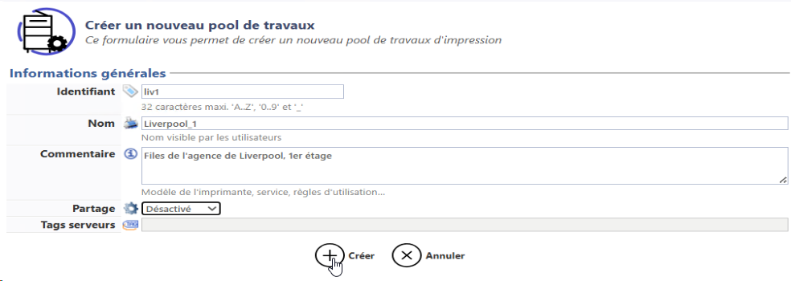
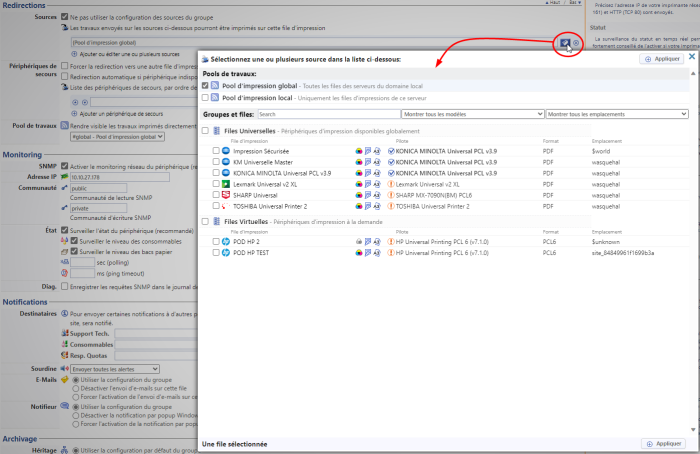

Watchdoc - Pool - Créer et configurer un pool - Procédure
Principe
Un Pool permet de regrouper des files compatibles afin qu'elles puissent être sollicitées en cas de panne par la fonction "Impression interserveur".
Pour activer cette fonction, il est donc nécessaire d'avoir au moins un pool. Si les 2 pools par défaut (#local et #global) ne sont pas insuffisants, vous pouvez en créer d'autres.
Procédure
Accéder à l'interface
-
Depuis le Menu Principal de Watchdoc, section Exploitation, cliquez sur Files d'impression, groupes de files et Pools :

-
dans l'interface Files d'impression, groupes de files & Pools, cliquez sur l'onglet Pools de travaux ;
-
dans la liste s'affichent les deux pools par défaut #Local et #Global ;

Créer le pool
-
Dans l'interface Créer un pool, remplissez les champs suivants :
-
Identifiant : saisissez un identifiant d'une longueur maximale de 64 caractères (à l'aide de majuscules, minuscules, chiffres et séparateur "_"). Une fois enregistré, cet identifiant ne peut plus être modifié.
-
Nom : saisissez un nom (qui s'affiche dans les interfaces de paramétrage) ;
-
Commentaire : si nécessaire, décrivez plus précisément le pool en indiquant, (par ex, précisez sa nature, sa localisation, sa raison d'être, sa date de création, le public auquel il s'adresse, etc.).
-
Mode de partage: dans la liste, sélectionnez son mode de fonctionnement :
-
Off : permet au pool de fonctionner uniquement avec les files physiques installées sur le serveur; les files virtuelles associées au serveur ne seront pas vues par d'autres serveurs ;
-
Peer to peer : permet au serveur d'interroger d'autres serveurs du réseau à la recherche de travaux d'impression en attente. Ce fonctionnement pouvant induire des latences (dues à des lenteurs du réseau, à des serveurs hors-ligne, etc.), il est recommandé de n'activer ce mode de partage que lorsqu'il est vraiment nécessaire.
-
-
Tags : si nécessaire, saisissez l'un des tags assignés au serveur en guise de filtre de sélection complémentaire. Ce ou ces tags, utilisés dans les filtres ou dans des scénarios de déploiement spécifiques, permettent d'inclure ou d'exclure certains périphériques du pool en fonction d'un critère précis (par exemple "Salariés" permet d'exclure du pool les périphériques estampillés avec le tag "Managers" ; "!offline" permet de ne pas tenir compte des périphériques indisponibles afin qu'ils ne ralentissent pas le temps de traitement).
-
cliquez sur le bouton Créer ou
 pour valider la création du pool :
pour valider la création du pool : 
Exemple : "Liverpool_1" pour tous les périphériques disponibles dans la filiale de Liverpool et "Etage_1" pour tous les périphériques localisés au 1er étage d'un bâtiment.
è Le pool créé apparaît désormais dans la liste des pools auxquels vous pouvez associer des files.
Configurer la file virtuelle
Pour configurer un pool sur une file virtuelle :
-
depuis le Menu principal, section Exploitation, cliquez sur Files d'impression, groupes de files & pools ;
-
cliquez sur l'onglet Files d'impression, puis, dans la liste, sélectionnez la file virtuelle dont les spools d'impression seront déversés dans le pool ;
-
dans l'interface de gestion de l'imprimante, cliquez sur le bouton Editer les propriétés ;
-
dans l'interface Propriété de la file d'impression, section Redirections, paramètre Pool de travaux, sélectionnez dans la liste déroulante le pool auquel la file virtuelle doit être associée. C'est dans ce pool que les spools d'impression de la file virtuelle seront stockés en vue d'être mis à disposition des files physiques.

-
cliquez sur le bouton pour valider le nouveau paramétrage de la file.
Configurer la file physique ou le groupe de files physiques
Pour configurer un pool sur une file physique ou le groupe de files physiques :
-
depuis le Menu principal, section Exploitation, cliquez sur Files d'impression, groupes de files & pools ;
-
dans la liste Files d'impression ou dans la liste Groupes de files, sélectionnez la file physique ou le groupe de files physiques en mesure d'imprimer les spools présents dans le pool d'impresssion ;
-
dans l'interface de gestion de l'imprimante, cliquez sur le bouton Editer les propriétés ;
-
dans l'interface Propriété de la file d'impression, section Redirections, paramètre Source, sélectionnez dans la liste déroulante l'entité à laquelle la file physique ou le groupe de files physique doit être associée. Il peut s'agit
-
d'un pool ;
-
d'un groupe de files,
-
d'une file spécifique :

-
-
cliquez sur le bouton pour valider le nouveau paramétrage de la file.